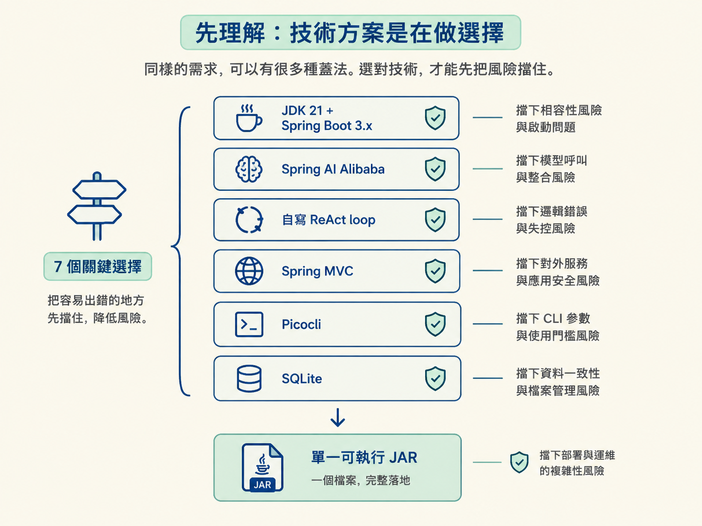
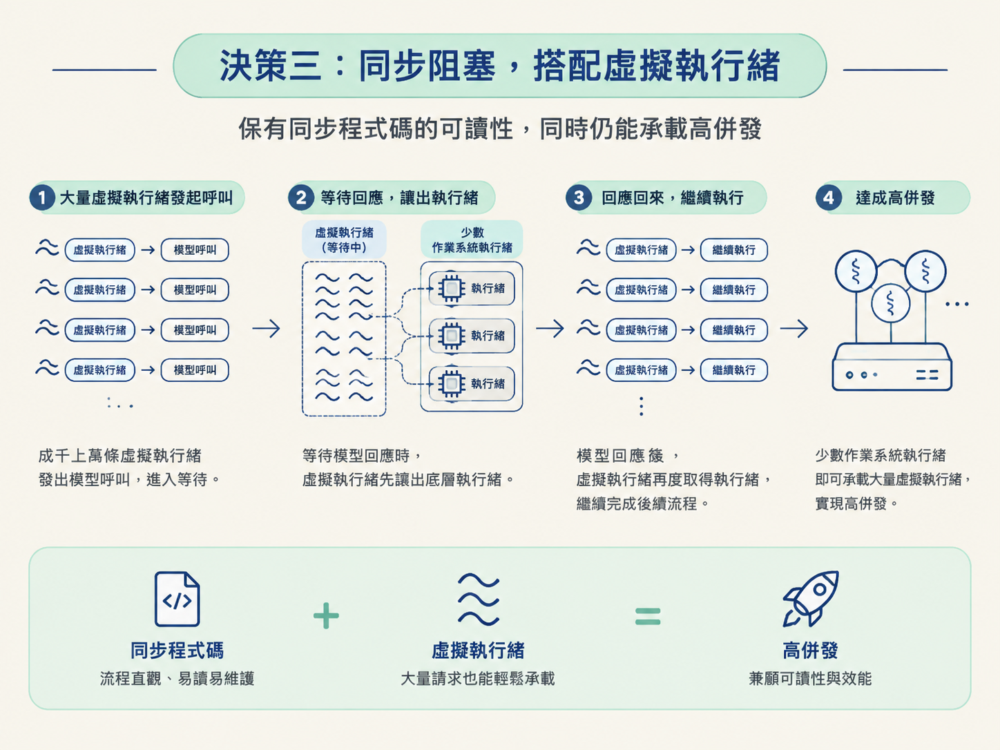
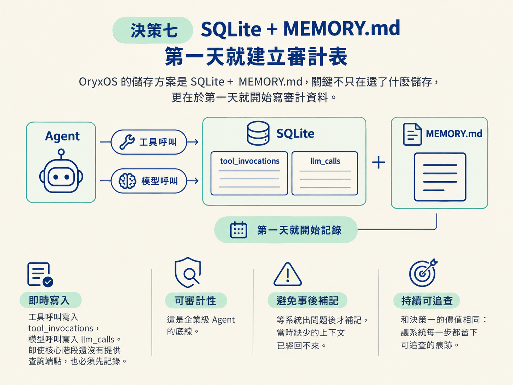

需求文件回答「要蓋什麼」，技術方案回答「要怎麼蓋」。同一個系統可以有很多種蓋法，但有些岔路一旦走錯，後面再補救，成本往往是原本的兩倍。
OryxOS 先把七個關鍵選擇釘死。每個決策都在回答同一個問題：「這裡最容易出錯的是什麼？我們選哪條路，才能先把風險擋住？」
整體技術棧是這些選擇的落地材料：JDK 21 + Spring Boot 3.x，使用 Spring AI Alibaba 呼叫模型，自己手寫 ReAct loop，以 Spring MVC 對外服務、Picocli 提供 CLI，使用 SQLite 做關聯式儲存，最後打包成單一可執行 JAR。可以把它記成：JDK 21 + Spring Boot 3.x + Spring AI Alibaba + 自寫 ReAct + SQLite + Picocli。

完成這一節後，你應該能說出 OryxOS 的七個關鍵技術決策，並解釋每個決策擋掉了什麼風險。
ReAct（Reason + Act，推理與行動交錯）是 Agent 的心跳：模型先判斷要做什麼，再執行工具，取得結果後繼續判斷。
市面上有現成的 Agent 框架可以套用，但 OryxOS 選擇自己寫這段迴圈。原因很直接：它只有幾十行，卻決定了系統何時思考、何時執行，以及每一輪要帶哪些上下文。
框架黑盒真正麻煩的地方不一定是效能，而是不可觀測。發生錯誤時，你可能看不見它在內部替你做了哪些決定，也無法沿著每一輪的 Reason、Act、Observe 追查。手寫這幾十行，換來的是可除錯、可審計，以及對 Agent 行為的完整掌握。
這是七個決策中最容易寫錯的一個。Spring AI 不只負責呼叫模型，也可以自動處理工具呼叫（function calling）。如果這個功能保持開啟，同時又在自己的 ReAct loop 裡執行工具，就可能讓同一個工具被呼叫兩次。
因此，OryxOS 只使用 Spring AI 的兩個部分：
自動工具執行則明確關閉。工具何時執行，永遠由自己的 ReAct loop 決定。這讓執行權只有一個入口，不會出現「框架執行一次、自己的迴圈又執行一次」的隱藏行為。
模型呼叫屬於 I/O 密集工作，程式大部分時間都在等待回應。通常有兩條路：使用 reactive（反應式）非阻塞程式，或維持同步阻塞寫法。
OryxOS 選擇同步阻塞，因為程式流程直觀，較容易閱讀、除錯與維護。但同步寫法的傳統問題是：每個等待中的請求都可能占住一條執行緒。
JDK 21 的虛擬執行緒（virtual thread）補上了這個缺口。它可以在少數作業系統執行緒上掛起成千上萬條虛擬執行緒。等待模型回應時，虛擬執行緒可以先讓出底層資源，回應回來再繼續執行。於是程式保有同步流程的可讀性，也能承載較高併發。

OryxOS 的工具可能來自三種來源：內建工具、Spring AI 的 @Tool 註解方法，以及外部的 MCP（Model Context Protocol，模型上下文協議）server。它們的來源與格式都不一樣。
OryxOS 用一層 OryxTool 抽象把這些來源包成同一種介面。對 ReAct loop 來說，工具不再有「來自哪裡」的差別；它只需要知道這是一個有名稱、有描述、有輸入 schema，而且可以執行的物件。
這一層也提供統一的執行路徑，讓後續的安全檢查與審計記錄可以掛在相同位置。
對外服務沒有選用 WebFlux，而是選擇成熟的 Spring MVC，再搭配虛擬執行緒。
理由和決策三相同：MVC 的同步心智模型比較簡單，虛擬執行緒則補上等待 I/O 時的併發能力。團隊不必為了非阻塞而改寫整個 Web 層，也不必在可讀性與併發能力之間硬選一邊。
Agent 可以讀檔、執行指令、發送 HTTP 請求，因此安全邊界不能靠「相信它不會亂做」。
傳統 Java 可能會想到 SecurityManager，但它在 JDK 21 已經被停用、不再可用。OryxOS 改用應用層白名單，在工具真正執行前檢查三類資源：
檢查點統一放在 OryxTool 的執行路徑上。這呼應決策四：不論工具來自內建程式、@Tool 方法或 MCP server，都必須經過同一層安全邊界，避免某個工具來源繞過檢查。
OryxOS 的儲存方案是SQLite + MEMORY.md，而這個決策的關鍵不只在選了什麼儲存，更在於第一天就開始寫審計資料。
工具呼叫寫入 tool_invocations，模型呼叫寫入 llm_calls。即使核心階段還沒有提供查詢這些資料的端點，也必須先記錄。
原因是可審計性是企業級 Agent 的底線。等系統出問題後才補記，當時缺少的上下文已經回不來。這和決策一的價值相同：讓系統每一步都留下可追查的痕跡。

把七個選擇放在一起看，它們都指向同一個目標：讓核心階段最短可跑，同時先擋住會讓專案失控的風險。
| 決策 | 擋掉的風險 |
|---|---|
| 自寫 ReAct | 黑盒不可觀測、無法除錯 |
| 只用半個 Spring AI | 工具被重複執行的隱藏行為 |
| 同步 + 虛擬執行緒 | 為併發而犧牲可讀性 |
| @Tool + OryxTool | 工具來源外洩到迴圈 |
| Spring MVC | 整個 Web 層被迫改寫 |
| 白名單沙箱 | Agent 越權存取資源 |
| SQLite + 第一天審計 | 不可審計、事後補不回來 |
這七條就是後續架構設計的護欄。之後再談模組切分或持久化選型時，只要問一句「為什麼要這樣做」，答案通常都能回到這張表。